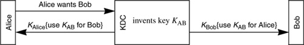
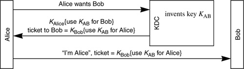
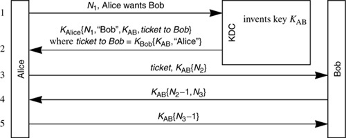
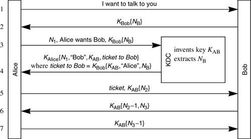
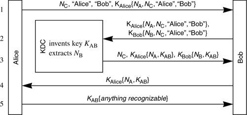
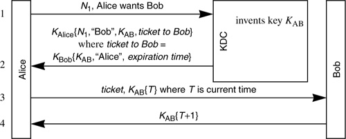

Networking Security Networking Security Networking Security Security Networking Security Networking Security Networking Charlie Kaufman Radia Perlman Mike Speciner Prentice Hall Network Security: Private Communication in a Public World, Second Edition
11.4. Mediated Authentication (with KDC)
In Chapter 9 Overview of Authentication Systems, we discussed the concept of a KDC, which has a database consisting of keys for all users. Any user Alice registered with the KDC can securely communicate with the KDC. Alice and the KDC can authenticate each other and encrypt their communication to one another because they each know Alice's key:
In the above exchange, the KDC does not know whether it was really Alice that asked to talk to Bob. Some bad guy, Trudy, could send the message to the KDC saying I am Alice, I'd like to talk to Bob. But that won't do Trudy any good because she cannot decrypt the encrypted KAB. Trudy is causing Bob to get a spurious message that Alice wants to talk to him using key KAB, but it doesn't do any harm. The only parties that can know KAB after this exchange are the KDC, Bob, and Alice, so after this exchange Alice and Bob can mutually authenticate using key KAB (using a protocol such as discussed in §11.2 Mutual Authentication).
Protocol 11-16 is not the way it is done in practice. That protocol has some practical problems, the most important of which is that if Alice immediately sends a message to Bob based on the new shared key, it's possible, given the vagaries of networks, for Alice's message to arrive first, in which case Bob would not know how to decrypt it. It also is a lot of trouble for the KDC to initiate a connection to Bob. Instead, since Alice is going to communicate with Bob anyway, the KDC gives Alice the information the KDC would have sent to Bob. The Kerberos protocol, which we'll describe in Chapter 13 Kerberos V4 and Chapter 14 Kerberos V5, refers to the encrypted piece of information that the KDC gives to Alice to pass along to Bob as a ticket to Bob. The ticket is information that will allow Alice to access Bob:

Protocol 11-17 is incomplete. It has to be followed by a mutual authentication exchange between Bob and Alice in which they prove to each other that they know key KAB. But in §11.2 Mutual Authentication we've described how they can do that.

11.4.1. Needham-Schroeder
A classic protocol for authentication using KDCs was designed by Needham and Schroeder. It is very similar to the protocol we just described, and it completes the exchange by doing the mutual authentication between Alice and Bob. [NEED78]. The Needham Schroeder protocol is important because it is a classic KDC-arbitrated authentication protocol and many others have been modeled after it. The Kerberos protocol is based on it, and it is instructive to understand its strengths and weaknesses.
The paper gives a few variants, but the basic Needham-Schroeder protocol is shown as Protocol 11-18. Let's analyze this protocol. First we must apologize for the arcaneness of the analysis. It's unfortunately necessary to go into this depth in order to really understand a protocol. Without a thorough understanding, there might be subtle security flaws.

The terminology nonce refers to a number that is used only once. A nonce could be a sequence number (provided that state is not lost during crashes), or a large random number. It also could be a timestamp, if you believe that your clock never goes backwards, but Needham and Schroeder specifically wanted to avoid dependence on timestamps (see §11.5 Nonce Types for more detail on nonces).
Message 1 tells the KDC that Alice wants to talk to Bob. The purpose of the nonce N1 is to assure Alice that she is really talking to the KDC. The (admittedly far-fetched) threat the protocol is trying to avoid is where Trudy has stolen an old key of Bob's, and stolen the message where Alice had previously requested a key for Bob. Bob, realizing Trudy has stolen his key, has changed his key. Trudy waits around until Alice makes a request to the KDC to talk to Bob. Trudy then replays the stolen message, which looks like an ordinary reply from the KDC. Then Trudy successfully impersonates Bob to Alice, because Trudy knows the key that Alice thinks the KDC just created for Alice and Bob. As we've already said, it is hard to imagine a circumstance where this would be a practical threat, but adding the nonce costs virtually nothing, and it removes the need to think about whether the threat might be practical in any particular circumstance.
In message 2, the KDC securely (i.e. encrypted and integrity-protected) gives Alice the key KAB it has generated for Alice and Bob to share. It puts in the string "Bob" to make it impossible for Trudy to tamper with Alice's request, substituting the string "Trudy" for "Bob" and then being able to trick Alice into talking to Trudy and thinking that Trudy is Bob. If Trudy were to tamper with message 1 by substituting her name for Bob's, then Alice will discover, in message 2, that the KDC has just given her a key to communicate with Trudy, not Bob. In message 2, along with the encrypted key KAB and Bob's name, the KDC also gives Alice a ticket to Bob. The ticket to Bob consists of the key KAB and Alice's name, encrypted with Bob's key. To Alice, the ticket will just be a pile of unintelligible bits. The Needham-Schroeder protocol has been criticized for doubly encrypting the ticket. The ticket is sent encrypted with Alice's key, though it would have been just as secure to send it in the clear.
In message 3, Alice sends a challenge (N2) to Bob, encrypted with KAB, along with the ticket. Bob decrypts the ticket to find the shared key KAB. He uses KAB to extract N2. Alice knows that only someone who knows Bob's key can decrypt the ticket and thereby discover the shared key KAB. In message 4, Bob proves he knows KAB, since he was able to find N2. Likewise, Bob assumes that it must be Alice if she knows KAB because the KDC puts Alice's name in the ticket with KAB. In message 4, in addition to sending back N2 (actually a decremented version of N2), he includes a challenge N3 encrypted with KAB, and Alice sends back (in message 5) a message proving she knows KAB.
There is an interesting reflection attack to which the protocol would be vulnerable if the encryption in message 4 were done using, say, DES in ECB mode. Suppose each of the nonces were 64 bits long. Because of the nature of ECB, N2-1 and N3 would each be separately encrypted. Suppose Trudy wants to impersonate Alice to Bob. First she eavesdrops on an authentication handshake where Alice talks to Bob. So Trudy sees messages 3 and 4. Later, she replays message 3 to Bob. Bob will respond with KAB{N2-1,N4} (where N4 is a nonce different from the one Bob chose last time he talked to Alice). Trudy can't return KAB{N4-1}, but she can open a new connection to Bob, this time splicing in KAB{N4} instead of KAB{N2}. Bob will return KAB{N4-1,N5}. Then Trudy can take the first encrypted block, which will be KAB{N4-1} and return that as message 5 of her first connection. In fact she will never have found out what N4 was, but she didn't need to know N4. She just needed to know KAB{N4-1}.
If encryption were done in CBC mode instead of ECB mode, Trudy would not be able to accomplish this, because she couldn't splice pieces of messages. But if encryption were done in CBC mode, there would be no reason to have Bob and Alice decrement each other's nonces. Message 4 could just as securely be KAB{N2,N3}, and message 5 could just as securely be KAB{N3}.
The lesson to be learned is that if pieces of a message must, for security reasons, be sent together, then the entire message must be integrity-protected so that parts of it cannot be modified by an attacker.
11.4.2. Expanded Needham-Schroeder
There is a remaining security vulnerability with Protocol 11-18. Suppose Trudy finds out Alice's key. Trudy can of course, at that point, claim to be Alice and get the KDC to give Trudy (which the KDC thinks is Alice), a shared key to Bob and a ticket to Bob. There's really nothing we can do about Trudy impersonating Alice if Trudy steals Alice's key. But we'd like it to be possible to prevent Trudy from doing any more damage once Alice changes her key. The problem is, with the protocol we've just described, the ticket to Bob stays valid even if Alice changes her key.
The vulnerability can occur even if Trudy only manages to capture a previous key used by Alice, say JAlice, and not the key Alice is using now. Suppose that when Alice was using JAlice, Trudy had overheard (and recorded) Alice asking the KDC for a ticket for Bob. At that time, the KDC would have generated a shared key JAB, and Trudy would have seen JAlice{N1,"Bob", JAB,KBob{JAB,"Alice"}}. At the time, Trudy could not decrypt the message, but we'll assume she's stored it away, hoping to capture an old key of Alice's. Once Trudy does discover JAlice, she can interpret the messages she's recorded, discover JAB, and, using the ticket KBob{JAB,"Alice"}, she can convince Bob that Alice will be talking to him using JAB. The fact that the KDC knew Alice's key changed is irrelevant; the KDC doesn't participate in this new authentication.
A paper [DENN81] pointed out this weakness, and in [NEED87], a suggested fix was proposed by adding two additional messages. Alice requests a nonce NB from Bob, which Alice will send to the KDC, and the KDC will package NB in the ticket to Bob. This will reassure Bob that whoever is talking to him has talked to the KDC since Bob generated NB. Once Alice changes her key, Trudy will not be able to talk to the KDC using Alice's old key, and any recorded messages from the KDC using an old key of Alice's will also not be useful. The proposed protocol added 2 messages, and therefore uses 7 messages. The protocol can, however, be reduced to 6 messages (see Homework Problem 9).

11.4.3. Otway-Rees
In [OTWA87], an improved authentication protocol is given. It also solves the ticket invalidation problem, and it does mutual authentication in 5 messages.
Otway and Rees mention that they were inspired by a remark from Needham that the suspicious party should always generate a challenge. Let's look at their protocol (Protocol 11-20). Alice generates two nonces. One, NC, is sent in the clear to Bob. In addition NC is included (along with the other nonce, NA) in a message encrypted by Alice that Bob cannot interpret. It just looks like a pile of bits, and he will simply forward KAlice{NA,NC,"Alice","Bob"} to the KDC.

In message 2, Bob forwards the encrypted message Alice sent, along with a message Bob encrypts which includes his own nonce NB, the nonce NC that Alice sent in the clear, "Alice", and "Bob", to the KDC. The KDC checks to make sure that the common nonce NC is the same in both encrypted messages. If not, the KDC will reject the message. The fact that they are the same proves that Bob is really Bob, since only someone knowing KBob can encrypt NC inside a message.
In message 3, the KDC gives Bob a message to forward to Alice. That message, when forwarded to Alice, reassures Alice that both the KDC and Bob are legitimate. (Alice knows the KDC is legitimate because it encrypts NA with key KAlice. Alice knows Bob is legitimate because the KDC would not have continued the protocol if it hadn't already verified that Bob was legit.) The KDC also tells Bob the common key, and reassures Bob that it is really the KDC by putting Bob's nonce NB inside the message to Bob.
Message 4 is merely having Bob forward KAlice{NA,KAB} to Alice. In message 5, Alice proves her identity to Bob by showing that she knows KAB. Bob does not need to prove his identity explicitly to Alice because Alice will assume that the KDC authenticated Bob.
In fact, this protocol could be simplified by getting rid of one of Alice's nonces (see Homework Problem 4).
If we want to be really paranoid, then for subtle reasons it is necessary in the Otway-Rees protocol that NC be not just a nonce but also unpredictable. Otherwise Trudy, in a rather involved scenario, could impersonate Bob to Alice. This is the way it would work: Suppose Alice is using a sequence number for NC. Trudy watches and sees that Alice is currently using, say, 007 for NC. So Trudy sends a message to Bob claiming to be Alice. She sends 008, "Alice", "Bob", garbage. Bob can't tell that the fourth element in the message is garbage. He forwards garbage on, along with his own message KBob{NB,008,"Alice","Bob"}. Trudy records that message. The KDC will reject Bob's message, since the garbage won't decrypt properly. Then Trudy waits until Alice generates her next request to talk to Bob. That will be 008, "Alice", "Bob", KAlice{NA,008,"Alice","Bob"}. Trudy forwards that, along with the message KBob{NB,008,"Alice","Bob"} she recorded from Bob, to the KDC. The KDC will accept the messages now since both will contain 008. The only authentication of Bob in the Otway-Rees protocol is done by the KDC verifying that the nonce NC is the same in the message encrypted with KBob and the message encrypted with KAlice. Trudy can complete the exchange by forwarding to Alice the message the KDC sends her for Alice. Alice will wrongly assume the party to whom she is talking is Bob. If Alice and Bob are planning on using the shared key, say for encrypting the messages to one another, then Trudy won't have succeeded. But if all Alice and Bob want to do is authenticate, then Trudy will have successfully impersonated Bob to Alice.
The Kerberos authentication service (see Chapter 13 Kerberos V4) is roughly based on the Needham-Schroeder protocol. It looks a lot simpler than these protocols because it assumes a universal idea of time, and includes expiration dates in messages. The basic Kerberos protocol is:

|